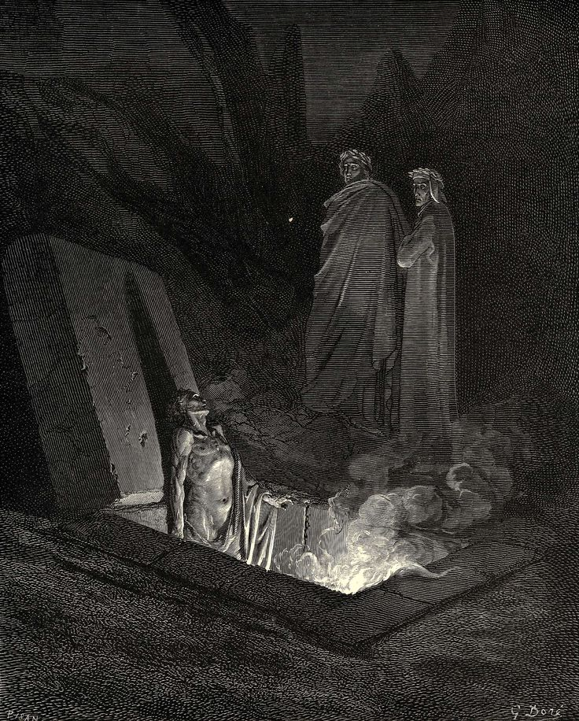

L'attesa di Virgilio e Dante davanti alle mura di Dite si fa carica di tensione per l'apparizione delle tre Furie (Megera, Tesifone e Alletto), che invocano Medusa per pietrificare il poeta. La situazione viene risolta dall'arrivo provvidenziale di un Messo Celeste, che con un tocco di verghetta apre le porte della città, mettendo in fuga i demoni. Entrati nel sesto cerchio, i due poeti si trovano dinanzi a una vasta distesa di avelli infuocati, all'interno dei quali soffrono gli Eretici e gli epicurei.
Mentre camminano tra le tombe scoperchiate, Dante viene interpellato da Farinata degli Uberti, nobile capo ghibellino, che sorge fieramente dal suo sepolcro infuocato. Il loro dialogo politico viene interrotto da Cavalcante de' Cavalcanti, che chiede notizie di suo figlio Guido. Farinata riprende poi la parola predicendo a Dante l'amarezza dell'esilio. In questo canto viene spiegata la condizione dei dannati: essi possono vedere il futuro lontano, ma ignorano il presente, capacità che perderanno del tutto dopo il Giudizio Universale.
